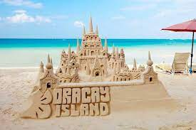

Click here to know more About Me
Boracay is a resort island in the Western Visayas region of the Philippines, located 0.8 kilometers (0.50 mi) off the northwest coast of Panay.
Coron, officially the Municipality of Coron (Tagalog: Bayan ng Coron), is a 1st class municipality in the province of Palawan, Philippines

Siargao is an island of nine municipalities in the province of Surigao del Norte. Known as the “Surfing Capital of the Philippines”, Siargao is mainly responsible for introducing surfing to the country.
Tagaytay is a popular holiday town south of Manila on the Philippine island Luzon. Known for its mild climate, it sits on a ridge above Taal Volcano Island, an active volcano surrounded by Taal Lake.